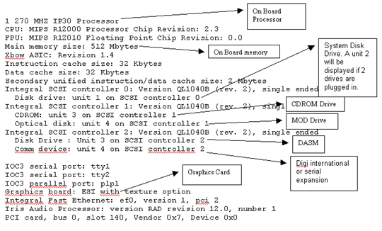

Operating Documentation
Direction 5440000, Rev# 5
Signa HDxt Service Methods
Module Version 1.0, Version Date 5/15/07
Operating Documentation |
If the bore temperature sensor is disabled, sites with iDrive software will have problems. Sites running the iDrive software must have a functional bore temperature sense circuit. The symptom for a non-functional Bore sensor will be evident when an iDrive scan is attempted; the prescan will complete OK, but the scan will stop immediately after the first pulse is heard in the body coil. No images will be produced and no errors will appear in the log.
If the system has iDrive software (as listed in Option Key tab of Guided Install), to verify functional bore temperature circuit, set up the scan in Table 1 (or any other Real Time scan). Download the scan and select [Scan]. If prescan completes and the scan continues to run, you have a functional bore temperature circuit. If prescan completes OK, but the scan stops immediately after the first pulse, check the bore temperature circuit.
Table 1: IDRIVE SAMPLE PROTOCOL
| PATIENT REGISTER [New Pt]PATIENT
INFORMATION Patient Id geservice Patient Name test Weight (Lb) 111 [Landmark] Landmark [Sternal Notch] PATIENT PROTOCOLS [Patient Position] PATIENT POSITION Patient Position [>][Supine] Patient Entry [>][Head First] Coil [...][Body][Accept] IMAGING PARAMETERS Plane [>][Axial] Mode [>][2D] Pulse Seq [...][Fast GRE][Accept] Imaging Options [Real-time] Psd Name no entry Protocol no entry SCAN TIMING # of Echoes 1 (default) TE [Min Full] TR. [Minimum] Flip Angle [20] Bandwidth [62.50] | SCANNING RANGE FOV 32 Slice Thickness 7 Spacing 1.5 Start 0 End 0 # Slices 1 (default) L/R Center 0 (default) P/A Center 0 (default) Table Delta 0.00 (default) ACQUISITION TIMING Freq 128 Phase 128 NEX 1 Phase FOV 1.00 (default) Freq Dir [>][R/L] Auto Center Freq [>][water] Autoshim [on] (lowest window) [Save Series] |
The [hinv] command can be used to check the configuration of the operator workspace. To use the command, open a command window and at the prompt type: hinv<Enter>. The following is an example of an [hinv] output of a common configured Signa system using Octane computer.
Illustration 1: Example [hinv] Output
